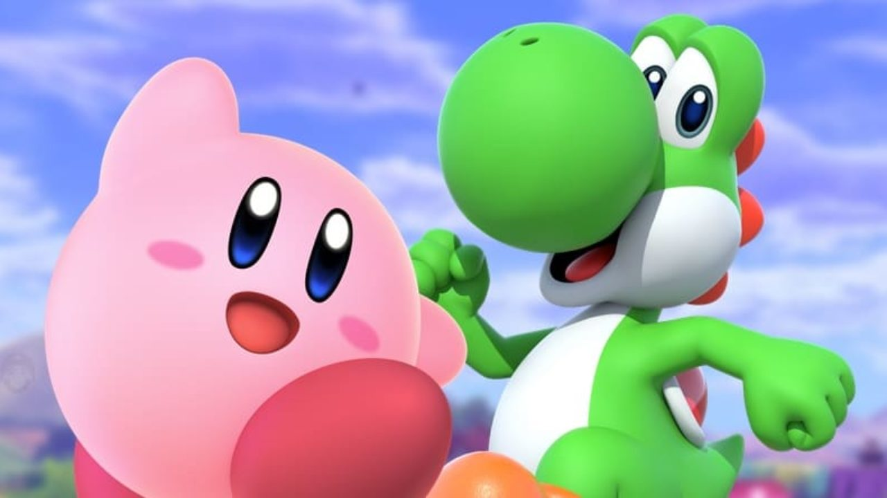

About Kirby
Kirby is a pink monster who likes to eat food. Go to character on Smash Bros
Kirby and Yoshi
Kirby's Characteristics
- He's fat
- He's circular
- He likes to eat
Kirby's Friends
Kirby has loads of friend. Such as Waddle Dee and Yoshi. Click on the links below to read more about them